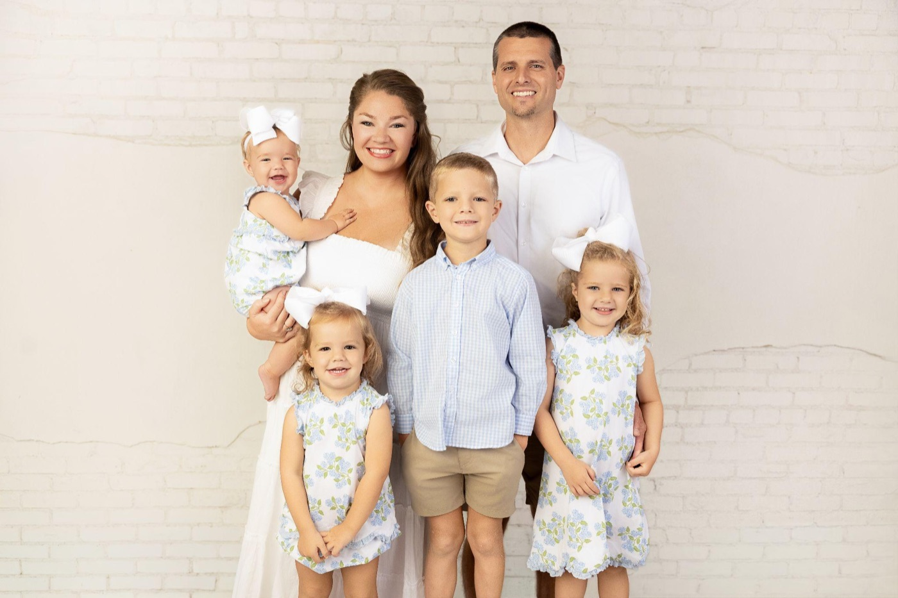
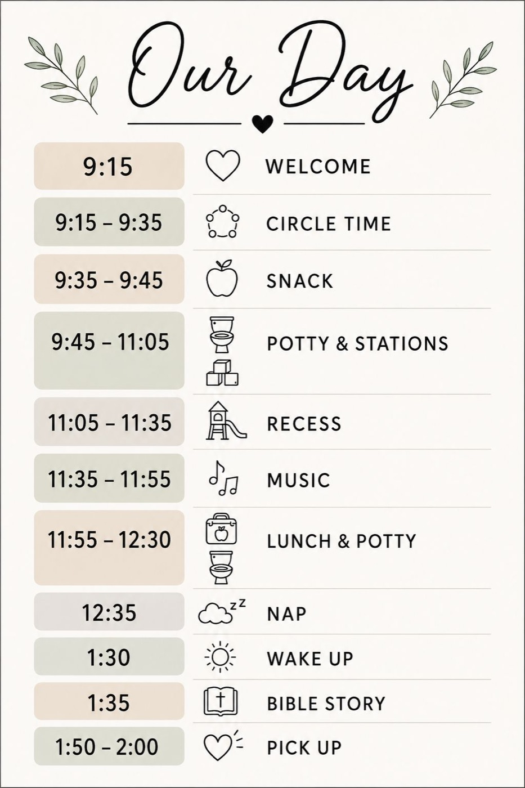

A ministry of First Baptist Church Alma
A Christ-centered program for children 6 months to Pre-K. Thursdays, 9:00 to 2:00, January 7 to May 20, 2027.
Space is limited. Spots are filled in the order families register.About
A weekly day for kids 6 months to Pre-K at First Baptist Church Alma, with two teachers in every room.

Director
Questions? kdo@firstalma.com
A Thursday at KDO
Drop off 9:00. Pick up 2:00. Same schedule every week.

Tuition
Locked in for founding families as long as your child stays enrolled.
$93 a month with snacks and supplies
Ages 18 months to Pre-K
$113 a month with snacks and supplies
Ages 6 to 18 months
Snacks, wipes, and craft materials. Already in the monthly amounts.
How paying works: pay by the 7th of each month, January to May. May is smaller since it has only 2 Thursdays. 10% off for siblings. 10% off for paying in full.
Safety
Rooms are divided by age. Kids under 3 and kids 3 and up are always in separate rooms. No state license is required because KDO is open 5 hours a week. KDO follows the licensed standards anyway.
Now hiring
$13 an hour, Thursdays. Training provided.
Questions
Spots go in the order families register. A room opens only when it has two trained adults, so we never enroll more kids than we can safely care for. If your child's room is full, you'll be on the waitlist and we'll reach out as soon as a spot opens.
No. Every family in Alma and the River Valley is welcome.
Arkansas exempts part-time programs like Mother's Day Out from licensing when they're open 5 hours a day or less and 10 hours a week or less. KDO is open 5 hours on Thursdays. We still follow the state's licensed standards for ratios, age groups, background checks, CPR, safe sleep, and drills.
KDO follows the Alma Public Schools calendar. If Alma schools close or start late for weather, KDO is closed that day.
Email Kim at kdo@firstalma.com.